I can help you design safe and meaningful science-backed transcendental experiences
- Psychedelic and wellness retreat centres
- Mental health and wellness clinics
- Immersive experience studios
- Corporate and cultural institutions
- Pop-up cities and festivals
- Research labs and universities
Immersive group experiences that combine theory, guided listening, and direct perceptual exploration. Designed for retreats, conferences, wellbeing programmes, and cultural events — from two hours to multi-day formats.
Strategic advisory for organisations working with altered states, immersive environments, or sound-based wellbeing. I help you structure your programme, define your sonic protocol, and build consistency into your participant outcomes.
Developing bespoke sonic and experiential protocols — including sound selection, sequencing, frequency architecture, and pacing guidelines — grounded in neuroscience and tested in practice.
End-to-end design of altered state experiences: spatial audio layout, environmental architecture, participant journey mapping, and integration frameworks. For retreat centres, festivals, wellness spaces, and cultural institutions.
Selected
Work
Public events are experimental environments where I explore the impact of sound on perception and collective states. These are not performances — they are designed experiences.
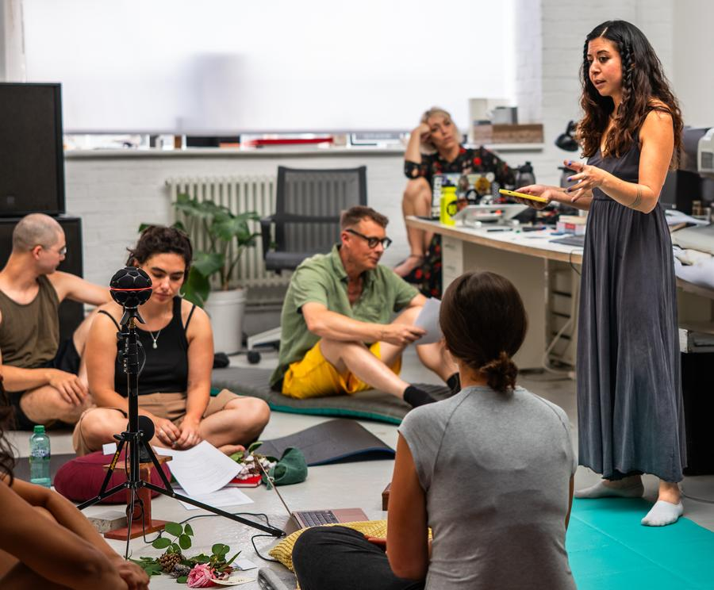
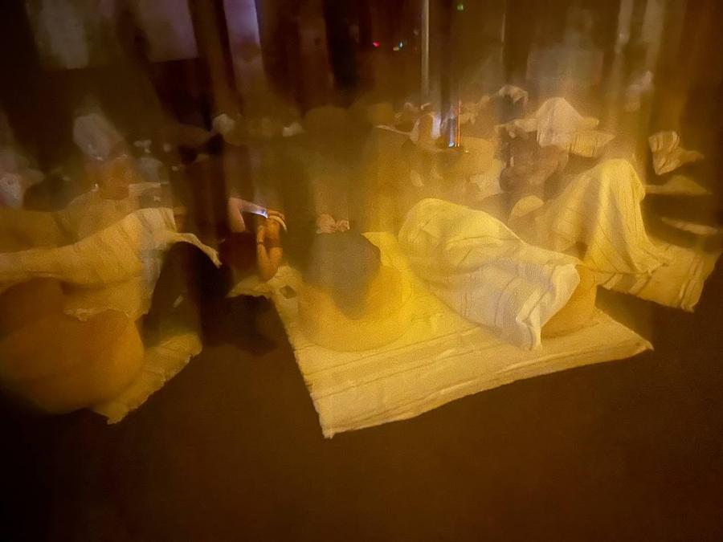
Workshops
I’ve hosted a series of events in London exploring contemporary rituals shaped by music, intention, and imagination, using multichannel spatial sound systems.
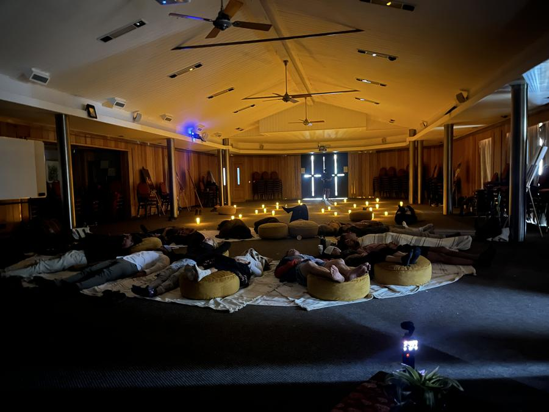
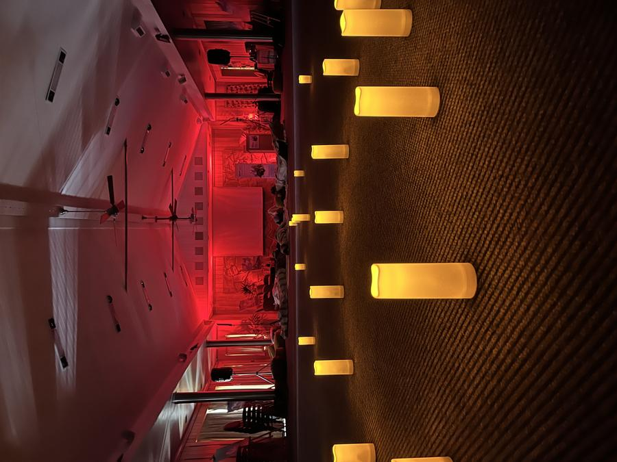
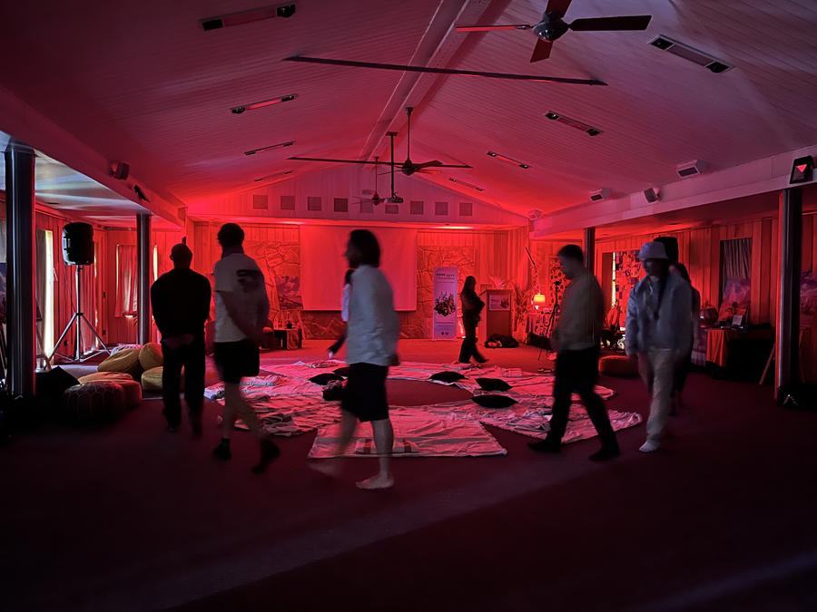
Pop Up City Experiences
For Edge City Patagonia, I led a series of immersive sonic experiences, exploring different dimensions of altered states; clarity, processing and expanded awareness. I gathered psychological and physiological data of the experience and I am in the process of publishing a paper about the experience.
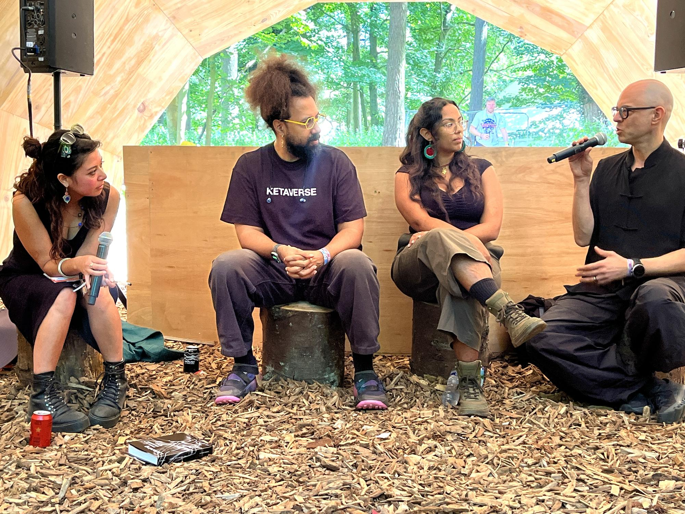
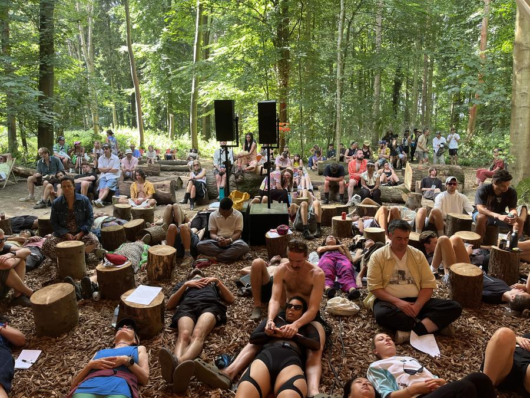
Festival Engagement
I collaborate with festivals and cultural institutions to lead deep listening experiences and convene conversations on music, wellbeing, and altered states of consciousness. At Houghton Festival, I curated a series of dialogues and listening-led gatherings with Reggie Watts, Safiyyah Nawaz, Nik Bärtsch, Al Wootton, and Daniela Huerta, examining how sound shapes perception, imagination, and collective states.
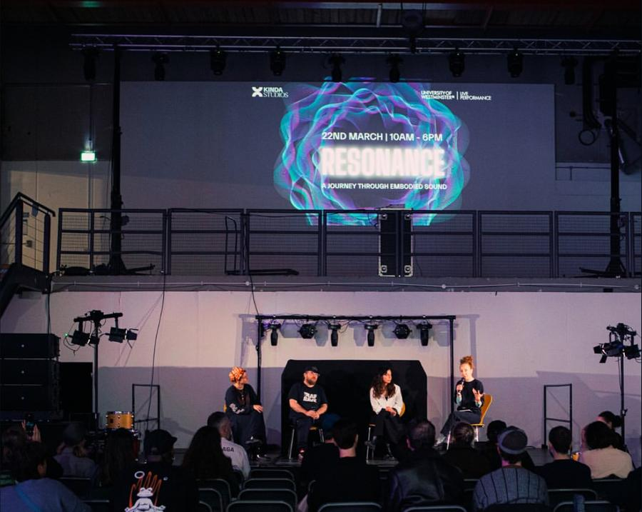

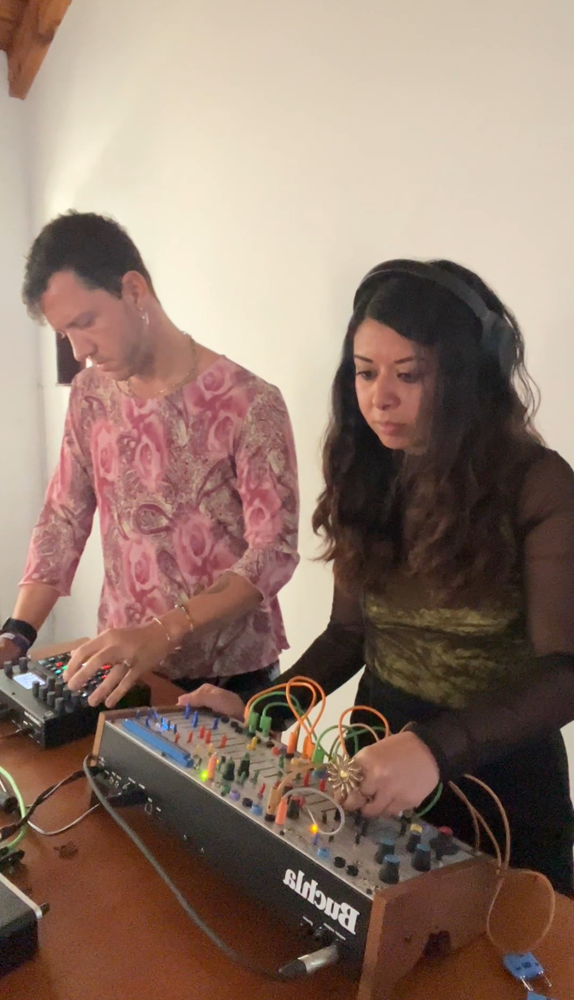
Public Speaking & Workshops
I’m regularly invited to give talks, join panel discussions, collaborate with artists, and facilitate workshops on imagination, neuroaesthetics, immersive sound, collective experiences, AI, and altered states of consciousness.
- Workshop on Active Imagination
- The Psychological Power of Art
- Resonance
- Engineering Sovereignty in the Age of Networked Consciousness
- …and others
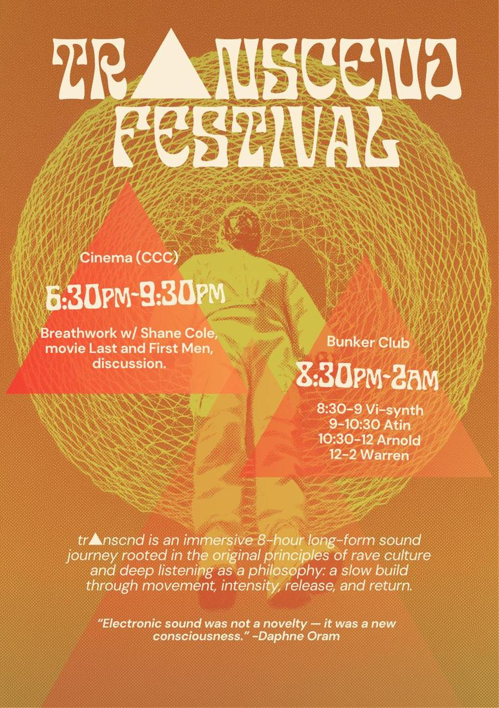
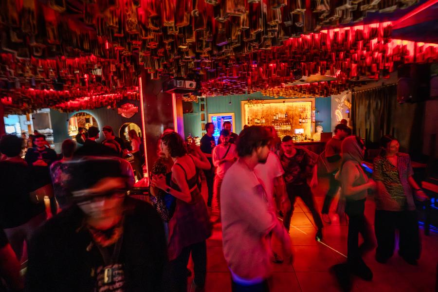
Tr▲nscnd
I created Tr▲nscnd, an 8-hour immersive sound-and-movement journey crafted to guide participants into expanded states of consciousness. Its first edition unfolded at Edge City Patagonia in 2025.
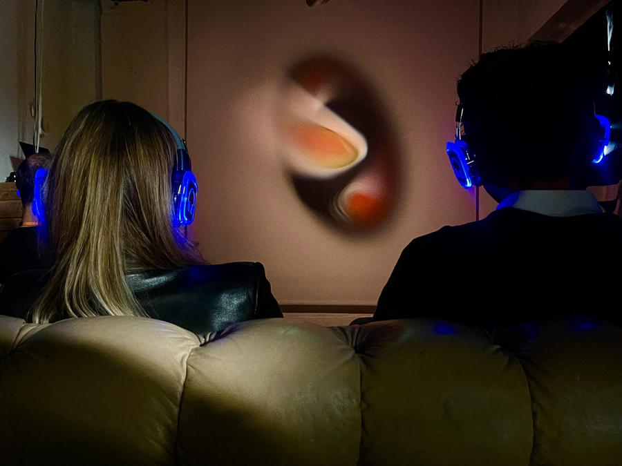
Art-Science Performances
I create and perform in art-science contexts — blending live electronics, modular synthesis, field recordings, and AI to produce immersive soundscapes that sit at the boundary of research and experience.
Let’s build something meaningful
Stay in the loop
Events are announced via newsletter and social media.
Leave your email and I’ll notify you directly.